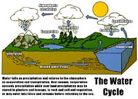
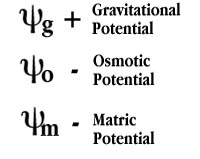
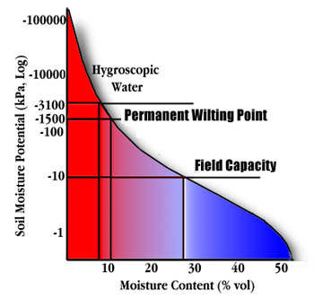

|
|
|
 Hydrologic Cycle
As one of the most important cycles on the planet, the hydrologic or water cycle shows how water which falls as
precipitation returns to the atmosphere through transpiration and evaporation.
The energy from the sun is the main driving force. On a local scale, how well the soil stores
water is of great importance to crop production and the vitality
of the land. In the Prairie region of Canada, in particular, the single most important factor in crop
production is available water. (i.e water stored in the soil plus effective precipitation
over the growing season).
Soil WaterIn order to understand soil water we have to perform a simple experiment. Take a sponge and soak it in water. Pick up the sponge and excess water will flow out of it due to gravity. Squeeze the sponge and more water flows. If you squeeze it as hard as you can a little more water flows but finally we can squeeze it no more. But if we wrap the sponge in a paper towel and squeeze the towel becomes damp. What we are seeing is the effect of surface tension and capillary action. Water is held in soil in pores of various sizes. The large pores readily lose water at the slightest squeeze but it becomes more difficult to remove water from the tiny pores. In air dry soils the water that remains is loosely bonded to the surface of minerals and we need to put the soil in an oven to remove this type of water. Soil water, therefore can be classified into three categories:
| |||||||||||||||||||||||||||||||||||
Soil Water EnergyRather than thinking of tension or suction, we can also think of water as being held by the soil particles in terms of energy. This is an important consideration because if we want to understand how water moves in soils we know that it will move from regions of high to regions of low energy. There are three forces which contribute to the energy state of soil water:
 Gravitational water has a positive energy and can flow out of the soil through the large pores. Osmotic potential is due to the attraction that salts have for water through the phenomenon of osmosis. This energy is negativerelative to free water. Finally, the potential energy of water attracted to soil solids is called the Matric potential. It too is negative. In an unsaturated soil, matric potential results from the capillarity and adhesion forces. Plants must overcome the energy of matric potential to extract water from the soil. How do we know how much water is available in a soil? For every soil there is a different distribution of pores of various sizes. Also we have different salt contents and separates. All of these factors will determine the energy at which the water is held. Most importantly, is the energy changes as the soil dries out because the plant can exert only so much suction. All of these properties are reflected in the soils moisture retention curve.  Note the typical S-shaped curve with the log axis for matric potential. There are two important points on the curve:
Available Water CapacitiesA major soil characteristic that affects available water is soil texture as seen in the following table:
Profile Moisture
How do you calculate the available water in a soil profile i.e. the available water to certain depth say 120 cm (4 feet)?. The concept of inches of water per foot of soil depth (cm water per 30 cm soil depth) is used.
A sandy soil at field capacity moisture content would hold 1 inch of water per foot of soil or
4 inches (10cm) if the soil was wet to a depth of four feet. If the farmer checks his soil with a probe
in springtime when the soil has thawed and sees that the soil is only wet to a depth of three feet -- there
would be only 3 inches (7.5 cm) of available water.
Water use efficiencyHow much water do you require to produce a crop? In Saskatchewan you need at least 12.5 cm available water (spring moisture plus growing season precipitation) to produce ANY grain. If there is 2.5 cm water above the threshold value of 12.5 cm you can expect about 200 kg grain. Continued additions of water result in less and less gains until no yield increases are observed (about 3000 kg/ha). Overall WUE for wheat is about 90 kg/ha/cm; for barley WUE is 100-120; oilseeds 40-60 kg/ha/cm. |
|||||||||||||||||||||||||||||||||||